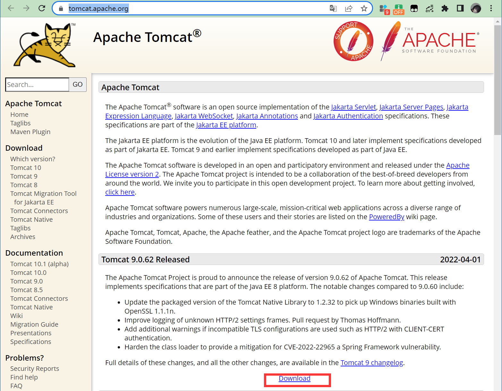
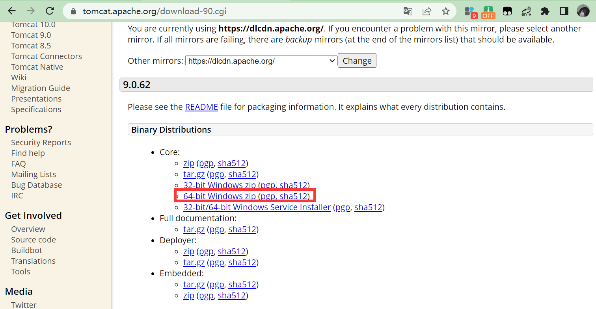
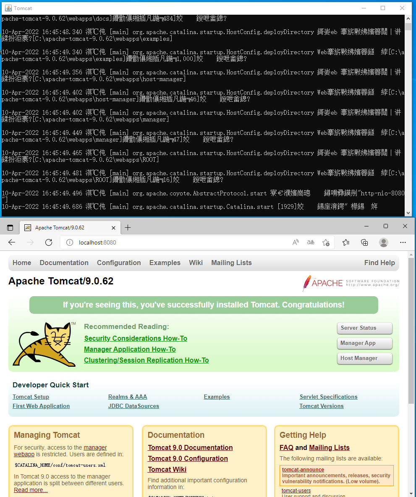

解压下载的压缩包
配置环境变量
JAVA_HOME

PATH
%JAVA_HOME%\bin;%JAVA_HOME%\jre\bin;

检测java环境是否正确
使用 java -version 来进行判断，如果显示出了结果，则成功了。

由于Tomcat是基于java的，所以安装jdk是安装Tomcat的第一步。对于国内环境来说，java8仍然是最常用的，所以连选择环境的考虑都不用考虑了。作者使用的java8是免安装的。解压后仍然需要配置环境。以便从中学习配置的细节。
解压下载的压缩包
配置环境变量
JAVA_HOME
PATH
%JAVA_HOME%\bin;%JAVA_HOME%\jre\bin;
检测java环境是否正确
使用 java -version 来进行判断，如果显示出了结果，则成功了。
下载连接： https://tomcat.apache.org/


下载zip之后，找到文件夹里的bin\startup.bat双击运行。

如果一切正常时，结果会产生一个小黑窗，在倒数第二行的最后，可以看到端口号为8080。接着使用浏览器，输入localhost:8080就可以进行访问了，至此Tomcat的安装就完成了。
